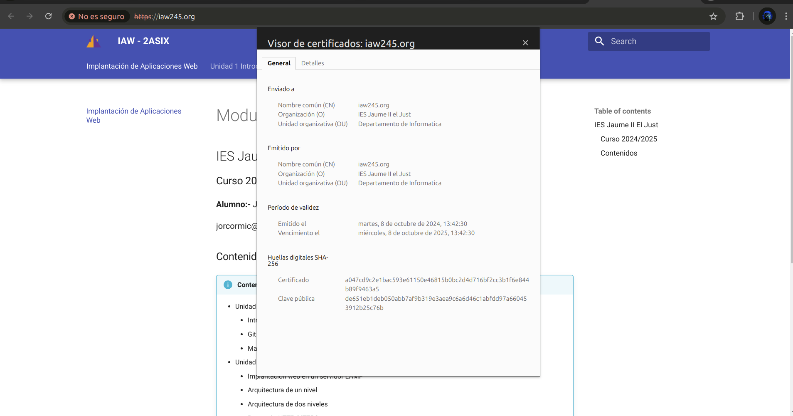

Practica 2: Certificado SSL/TLS
Objetivos de la práctica
- Crear un certificado SSL/TLS autofirmado con la herramienta openssl.
- Configurar el servidor web Apache para que utilice el certificado SSL/TLS autofirmado.
1. HTTPS. Creación y configuración de un certificado SSL/TLS autofirmado en Apache
Nota
El proceso de creación de un certificado autofirmado consta de los siguientes pasos:
- Crear una clave privada y un certificado autofirmado.
- Configurar la clave privada y el certificado autofirmado en el servidor web.
1.1 Instalación del servidor web Apache
En primer lugar deberemos tener instado un servidor web Apache en nuestra máquina.
1.2 Creación del certificado autofirmado
Para crear un certificado autofirmado vamos a utilizar la utilid openssl.
Este es el comando que vamos a utilizar:
$ sudo openssl req -x509 -nodes -days 365 -newkey rsa:2048 -keyout /etc/ssl/private/apache-selfsigned.key -out /etc/ssl/certs/apache-selfsigned.crt

Este comando nos genera un certificado autofirmado con una clave privada y un certificado autofirmado.
1.3 Cómo automatizar la creación de un certificado autofirmado
Para automatizar la creación de un certificado autofirmado desde un script de Bash, podemos hacer uso del parámetro -subj que nos permite pasar los datos se adjuntan al certificado como argumentos desde la línea de comandos.
Ejemplo:
#!/bin/bash
set -x
# Configuramos las variables con los datos que necesita el certificado
OPENSSL_COUNTRY="ES"
OPENSSL_PROVINCE="Valencia"
OPENSSL_LOCALITY="Tavernes de la Valldigna"
OPENSSL_ORGANIZATION="IES Jaume II el Just"
OPENSSL_ORGUNIT="Departamento de Informatica"
OPENSSL_COMMON_NAME="iaw245.org"
OPENSSL_EMAIL="jorcormic@alu.edu.gva.es"
# Creamos el certificado autofirmado
sudo openssl req -x509 -nodes -days 365 -newkey rsa:2048 -keyout /etc/ssl/private/apache-selfsigned.key -out /etc/ssl/certs/apache-selfsigned.crt -subj "/C=$OPENSSL_COUNTRY/ST=$OPENSSL_PROVINCE/L=$OPENSSL_LOCALITY/O=$OPENSSL_ORGANIZATION/OU=$OPENSSL_ORGUNIT/CN=$OPENSSL_COMMON_NAME/emailAddress=$OPENSSL_EMAIL"
Descarga de Scripts de la Práctica 2 - Unidad 2
Aquí puedes descargar los scripts necesarios para la práctica.
Descargar setup_selfsigned_certificate.sh
1.4 Cómo consultar la información del sujeto del certificado
$ openssl x509 -in /etc/ssl/certs/apache-selfsigned.crt -noout -subject
1.5 Cómo consultar la fecha de caducidad del certificado
$ openssl x509 -in /etc/ssl/certs/apache-selfsigned.crt -noout -dates

1.6 Configuración de un VirtualHost con SSL/TSL en el servidor web Apache.
Paso 1
Editamos el archivo de configuración del virtual host donde queremos habilitar el tráfico HTTPS.
En nuestro caso, utilizaremos el archivo de configuración que tiene Apache por defecto para SSL/TLS, que está en la ruta:/etc/apache2/sites-available/default-ssl.conf.
El contenido del archivo será el siguiente:
<VirtualHost *:443>
ServerName iaw2425.org
DocumentRoot /var/www/www.iaw2425.org/site
DirectoryIndex index.php index.html
SSLEngine on
SSLCertificateFile /etc/ssl/certs/apache-selfsigned.crt
SSLCertificateKeyFile /etc/ssl/private/apache-selfsigned.key
</VirtualHost>

Las directivas que hemos configurado son: - : Indica que este virtual host escuchará en el puerto 443 (HTTPS). - ServerName: Indica el nombre de dominio y se utiliza para indicar al servidor web Apache qué peticiones debe servir para este virtual host. En nuestro ejemplo estamos utilizando el dominio practicahttps.local. - DocumentRoot: Es la ruta donde se encuentra el directorio raíz del host virtual. - SSLEngine on: Configuramos que este virtual host utilizará SSL/TLS. - SSLCertificateFile: Indica la ruta donde se encuentra el certificado autofirmado. - SSLCertificateKeyFile: Indica la ruta donde se encuentra la clave privada del certificado autofirmado.
Paso 2
Habilitamos el virtual host que acabamos de configurar.
$ sudo a2ensite default-ssl.conf
Paso 3
Habilitamos el módulo SSL en Apache.
$ sudo a2enmod ssl
Paso 4
Configuramos el virtual host de HTTP para que redirija todo el tráfico a HTTPS.
En nuestro caso, el virtual host que maneja las peticiones HTTP está en el archivo de configuración que utiliza
Apache por defecto para el puerto 80 :/etc/apache2/sites-available/000-default.conf.
El contenido del archivo será el siguiente:
<VirtualHost *:80>
#ServerName practica-https.local
DocumentRoot/var/www/html
#Redirige alpuerto 443 (HTTPS)
RewriteEngineOn
RewriteCond%{HTTPS} off
RewriteRule^ https://%{HTTP_HOST}%{REQUEST_URI} [L,R=301]
</VirtualHost>
 Paso 5
Paso 5
Para que el servidor web Apache pueda hacer la redirección de HTTP a HTTPS es necesario habilitar el módulo rewrite en Apache.
$ sudo a2enmod rewrite
Paso 6
Reiniciamos el servicio de Apache.ç
$ sudo systemctl restart apache2
Paso 7
Una vez llegado a este punto, es necesario comprobar que el puerto 443 está abierto en las reglas del firewall para permitir el tráfico HTTPS.
Paso 8
Accede desde un navegador web al nombre de dominio que acabas de configurar. En nuesro caso será: https://iaw245.org
